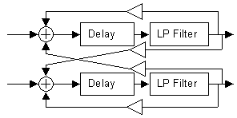
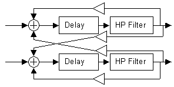
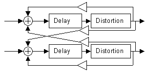

Processing
Departments

More Delays
Hans Mikelson
delay2.orc delay2.sco limit.wav (398K)
Introduction
In the Summer 1999 issue I described a couple different delays. In this issue I describe some more exotic delays. These are all based on inserting an additional processing element in the feedback loop of the delay.
Low Pass Filter
Probably the most common thing to insert into the feedback path of a digital delay is a low pass filter.
Figure 1. Stereo delay with low pass filters in the feedback loop.
Below is the Csound code corresponding to this.
adell delay asigl + afltl*ifdbkl + afltr*ixfbl, itiml adelr delay asigr + afltr*ifdbkr + afltl*ixfbr, itimr afltl butterlp adell, ifco afltr butterlp adelr, ifco
This creates a smoother sounding delay as more and more of the high frequencies are filtered out each loop through the filter. This can be used to create an "analog" delay sound. It is also a useful starting point for a reverb. This is also the basic structure of digital waveguides used in physical modeling.
High Pass Filter
The next instrument uses a high pass filter after the delay. This can be used to make the looped section more crisp sounding each loop through the delay.
Figure 2. Stereo delay with high pass filters in the feedback loop.
This reminds me of the echo effect used by some classic rock bands such as Pink Floyd.
; Sta Dur Amp TL FBL XFBL TR FBR XFBR InL InR Fco i17 1.3 5 2 .74 1.0 0 .73 1.0 0 1 1 800
The instrument is timed to begin on a certain word. Times for the left and right sides are provided. Feedback and cross-feedback levels are specified for each side. The left and right input channels are specified. These make use of the zak system. Finally the cut-off frequency of the high-pass filter is given.
Distortion
The last instrument uses distortion to shape the sound at each pass. Each repeated sound becomes more and more distorted until the final sound is nearly unrecognizable.
Figure 3. Stereo delay with distortion in the feedback loop.
Just for fun I used this configuration to generate a type of distorted reverb.
; Sta Dur Amp TL FBL XFBL TR FBR XFBR InL InR Drive i18 7.3 4 1 .14 .12 -.21 .13 .10 -.23 1 2 2.5
The i-statement has the same parameters as the others except that a value is supplied for the amount of overdrive instead of a cut-off frequency.
Further Experiments
Try experimenting with other elements in the feedback loop. I have tried inserting resonant filters with frequency modulation or noise in the feedback loop. Each time through the loop the signal can be made to include more and more noise.